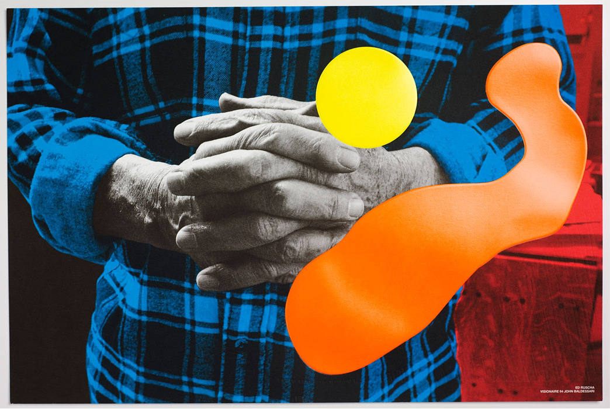

×
Nong Chotipatoomwan is Thai designer based in London / Bangkok.
hello@nong-nong.com
http://nong-nong.com
+44(0)7451062074
experience
Avroko | Bangkok, Thailand
Designer, May 2015 - Sept 2015
Visionaire Publishing | New York, USA
Product Designer, Sept 2013 - August 2014
3.1 Philip Lim | New York, USA
2012, Nov 2013 - March 2014
Bec Brittain Studio | New York, USA
Design Intern, Summer 2013
education
2017
Royal College of Art | London, UK.
MA Design Products, Platform: Design as Catalyst
2013
Rhode Island School of Design | Providence, United States.
BFA Industrial Design, Concentration: Environmental Studies
2012
Politecnico di Milano Exchange Program | Milan, Italy.
Product Development, Interaction System Design
2008
Tintern Schools | Melbourne, Australia.
International Baccalaureate (IB), HL: Psychology, Maths, Arts
publication
Sight Unseen (WEB)
Blueprint Magazine
awards
Selected for Luciene Day Foundation Prize
Shortlisted for the Future of Work Award

John Baldessari x Samsung
2015
Brass, festoon led, wiring
A set of apparatus that supports the changing needs of mobile workers
The retro-classic interior of the Raging Bull Chophouse in Shangrila Manila celebrates wood and metal craftsmanship in detail. The Caliper composed of 100 individually-crafted and layered metal calipers shaped like bull horns. The challenge for this design was figuring out the led detail and feeding the positive and negative current through the brass plate.